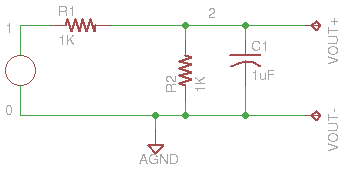

Devre Simulasyonu - Gnucap
Elektronik devrelerin nasıl işleyeceğini önceden görmek için bir
simülasyon programı, gnucap. Kurmak için apt-get install
gnucap. Fazla büyük bir program değil. Bir örnek
http://thoughtmountain.com/gnucap_demo.html
Örnek şu devreyi kodlamış,

print (open("demo1.ckt").read())
.TITLE Ornek #1
Vin 0 1 AC 1
R1 1 2 1K
R2 0 2 1K
C1 0 2 1UF
.OPTION OUT=80
.PRINT OP Iter(0) V(2)
.PLOT AC VDB(2)(-20,0)
.AC 5 1K OCT
Simülasyonu işletmek için,
!gnucap -b demo1.ckt
Gnucap 2009.12.07 RCS 26.136
The Gnu Circuit Analysis Package
Never trust any version less than 1.0
Copyright 1982-2009, Albert Davis
Gnucap comes with ABSOLUTELY NO WARRANTY
This is free software, and you are welcome
to redistribute it under the terms of
the GNU General Public License, version 3 or later.
See the file "COPYING" for details.
VDB(2)-20. -15. -10. -5. 0.
+-----------------+----------------+-----------------+----------------+
5. | . . * . |
10. | . . * . |
20. | . . * . |
40. | . . * . |
80. | . . * . |
160. | . . * . |
320. | . . * . |
640. | . * . . |
1.28K | * . . . |
+-----------------+----------------+-----------------+----------------+
Çıktıyı sayısal olarak bir dosyaya yönlendirmek için .PLOT komutu
.PRINT ile değiştirilir, ve komut satırında çıktı bir dosyaya yönlendirilir,
print (open("demo2.ckt").read())
.TITLE Ornek #2
Vin 0 1 AC 1
R1 1 2 1K
R2 0 2 1K
C1 0 2 1UF
.OPTION OUT=80
.PRINT OP Iter(0) V(2)
.PRINT AC VDB(2)(-20,0)
.AC 5 1K OCT
!gnucap -b demo2.ckt > out.txt
Sonuç dosyasına bakalım,
print (open("out.txt").read())
Gnucap 2009.12.07 RCS 26.136
The Gnu Circuit Analysis Package
Never trust any version less than 1.0
Copyright 1982-2009, Albert Davis
Gnucap comes with ABSOLUTELY NO WARRANTY
This is free software, and you are welcome
to redistribute it under the terms of
the GNU General Public License, version 3 or later.
See the file "COPYING" for details.
#Freq VDB(2)
5. -6.0217
10. -6.0249
20. -6.0377
40. -6.0886
80. -6.2866
160. -6.9989
320. -9.054
640. -13.047
1.28K -18.368
Yukarı